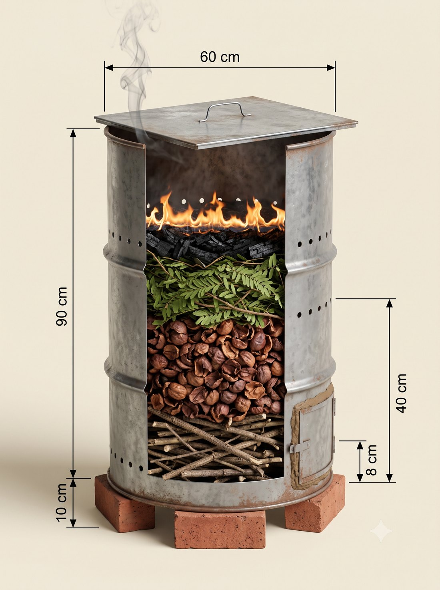
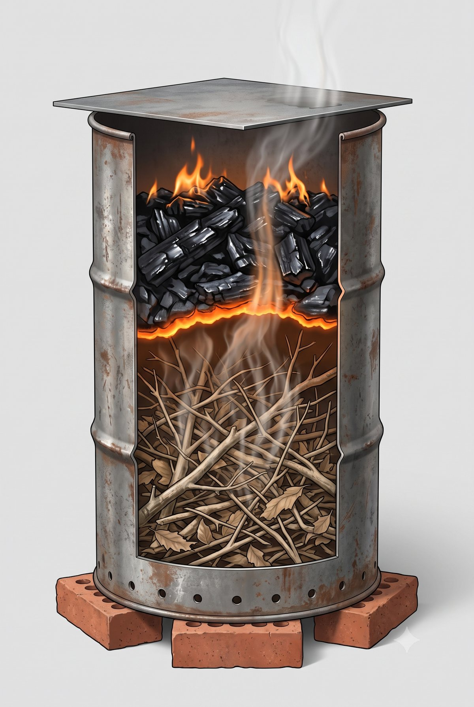
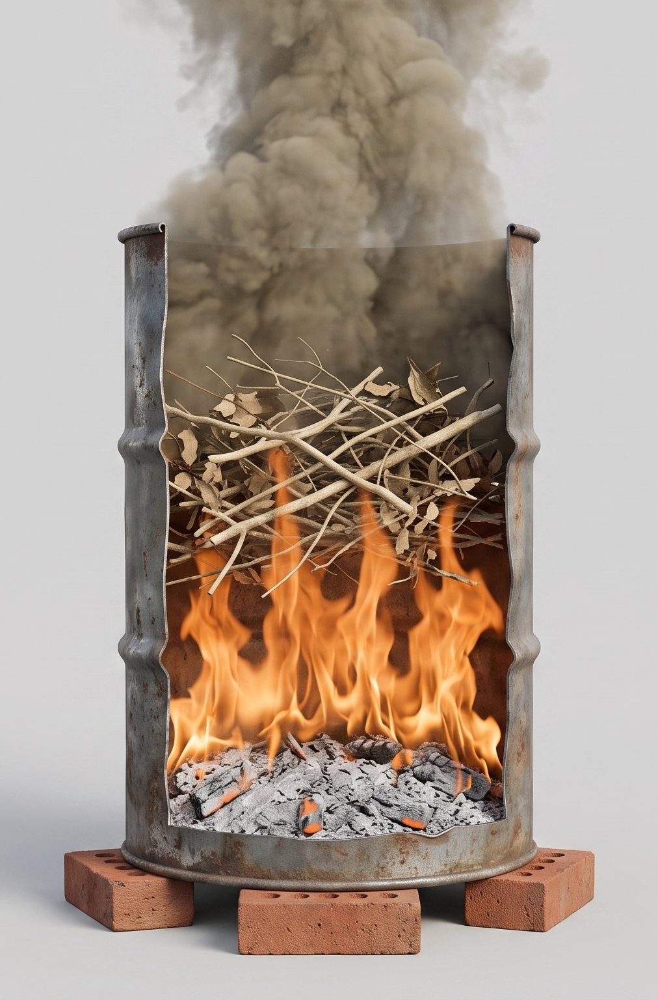
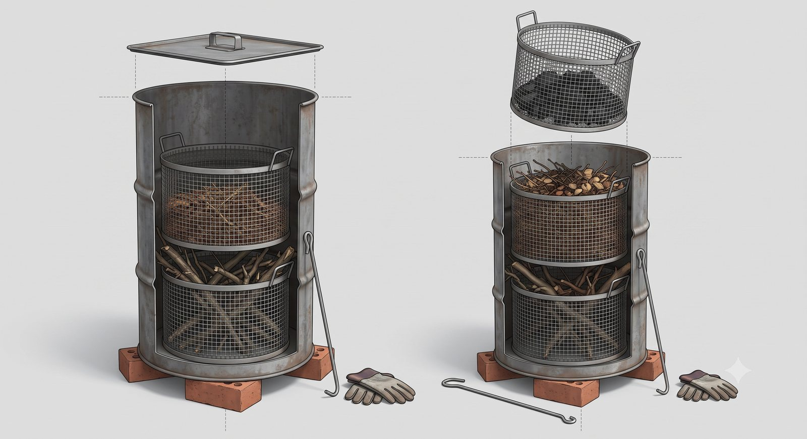

Tahap 2 dari tong bakar · drum yang sama, tiga tambahan · 1 Agustus 2026
📖 Ini ringkasan kerja. Spesifikasi penuh, troubleshooting, hitungan 5 tahun, dan rujukan ada di tombol ↗ Buka penuh di atas.
Biochar adalah TAHAP 2. Tahap 1 adalah tong bakar — drumnya sama persis.Dengan tenaga yang ada sekarang (Wakif dan Lek Nardi), drum biochar terlalu menuntut untuk dijalankan lebih dulu: penjagaan 2–4 jam, pendinginan tertutup semalam, plus charging sebelum arangnya boleh dipakai. Tidak ada uang terbuang — drumnya tidak diganti, hanya ditambah lubang dan tutup.
👁 Drum biochar & cara membakar
Enam langkah, charging, dosis, dan aturan mutlak ada di bawah gambar.

12345
B1Drum biochar — ukuran & pola lubang✓ 5 angka diperiksa⚠ barisan lubang digambar sedikit lebih tinggi
Tutup pelat seng 60 × 60 cm + 4 lubang Ø 3 mm (sebesar lidi) + pegangan. Menutup ± 80%, bukan rapat total
Api hanya di permukaan ATAS — inilah beda pokoknya dari tong bakar. Api turun pelan, bahan jadi arang bukan abu
6 lubang Ø 5 mm(sebesar tusuk sate) di ketinggian 40 cm(dua jengkal) — udara sekunder, ini yang membakar asapnya
8 lubang Ø 8 mm(sebesar pensil) di ketinggian 8 cm(empat jari) — 6 di dinding + 2 di daun pintu
Pintu disumbat tanah liat — pintu bocor = arang habis jadi abu. Ini kegagalan paling sering
Drum yang sama persis dengan tong bakar, hanya ditambah dua baris lubang dan satu tutup. Kelima angka di gambar sudah kami periksa satu per satu dan semuanya benar — tinggi 90 cm, lebar 60 cm, terangkat 10 cm, lubang bawah 8 cm dan lubang atas 40 cm, keduanya diukur dari dasar drum. Dua catatan kecil: barisan lubang digambar sedikit lebih tinggi daripada angkanya, dan ada satu barisan lubang tambahan di badan atas yang tidak ada dalam spesifikasi — ikuti angkanya, bukan gambarnya.

1234
B2Bakar dari ATAS — benar
Arang sudah jadi, berada di ATAS api — aman, tidak ikut terbakar habis
Pita bara — inilah muka api, tebalnya hanya sekepalan. Ia bergerak turun pelan-pelan
Kayu mentah di BAWAH — asapnya wajib naik menembus api dulu, jadi ikut terbakar. Itu sebabnya asap yang keluar tipis saja
Lubang udara primer di 8 cm dari dasar, tepat di atas batu bata
✅ Cara kita. Hasil: arang 25–50% dari berat bahan.

1234
B3Bakar dari BAWAH — salah
Abu kelabu di DASAR — bahan yang sudah terbakar habis. Ini yang kita hindari
Api di bawah, merambat naik — semua bahan akhirnya jadi abu
Kayu mentah di ATAS api — asapnya lolos begitu saja tanpa melewati api
Asap tebal keluar bebas dari mulut drum yang terbuka — mengganggu tetangga, dan itu karbon yang terbuang
❌ Cara biasa — untuk tong bakar tidak apa-apa, untuk biochar salah. Hasil: abu 2–6% saja.

1234
B4Keranjang dalam bersusun dua⚠ usulan tahap 2 — belum dibuat
Keranjang ATAS — diisi bahan halus: ranting kecil, daun kering, kulit kopi
Keranjang BAWAH — diisi bahan kasar: ranting besar dan kayu. Ada celah selebar jari antara keranjang dan dinding drum supaya panas merata
Diangkat LURUS KE ATAS setelah dingin — drumnya tidak pernah digulingkan. Inilah jawaban atas pertanyaan "bagaimana mengeluarkan arang dari drum seberat 50–70 kg"
Kait besi panjang + sarung tangan — alat angkatnya. Satu keranjang ± 20 kg, bisa diangkat satu orang
Usulan tahap 2 — belum dibuat. Dasar keranjang sebaiknya pelat penuh, bukan jaring, supaya abu ikut terangkat dan tidak berhamburan ke dasar drum.
🖼️ Semua gambar di halaman ini dibuat dengan bantuan AI sebagai alat bantu memahami — bukan foto kebun kita, jangan dipakai sebagai bukti kondisi lapangan. Yang sah adalah bulatan bernomor dan daftar di bawah tiap gambar — itu tulisan kita. Kalau angka di gambar berbeda dengan tabel di halaman ini, tabel yang benar.
1 Apa bedanya arang biasa dengan biochar
Bayangkan begini
Biochar = rumah kos berpori untuk air, hara, dan mikroba. Tanpa rumah, ketiganya numpang lewat: air lolos ke bawah, pupuk ikut hanyut, mikroba tak punya tempat menetap.
Karena itu
Efeknya tidak terasa di bulan pertama — ia menumpuk dari tahun ke tahun. Sekali ditanam, bertahan puluhan tahun. Justru itu sebabnya tidak perlu diulang tiap tahun.
Dan karena itu pula
Arang yang belum di-chargemenyerap hara dari tanah, bukan memberi. Rumah kosong akan diisi — kalau tidak kita yang mengisi duluan, tanah yang dikuras.
2 Dari tong bakar ke drum biochar — tiga tambahan
Ukuran drum biochar
Bagian
Ukuran
Patokan
Drum
200 L · Ø 57–60 cm × t 88–90 cm
tiga jengkal · setinggi pinggang
Tutup pelat seng
60 × 60 cm, menutup ± 80%
bukan rapat total
Pintu (disumbat tanah liat)
40 × 25 cm, ambang 3 cm
sama dengan tong bakar
① Udara primer
8 lubang Ø 8 mm di ketinggian 8 cm
sebesar pensil · empat jari
② Udara sekunder
6 lubang Ø 5 mm di ketinggian 40 cm
sebesar tusuk sate · dua jengkal
③ Lubang tutup
4 lubang Ø 3 mm
sebesar lidi sapu
Isi & suhu
maks 70% · 300–500 °C selama 2–4 jam
dingin tertutup 12–24 jam
📏 Kalau angka di gambar berbeda dengan tabel di halaman ini, tabel yang benar. Tabel tidak bisa salah dibaca gara-gara posisi garis atau panah.
Tong bakar tahap 1
Drum biochar tahap 2
Udara
Bebas masuk
Dibatasi lubang tertentu saja
Arah nyala
Dari bawah ke atas
Dari atas ke bawah — nyalakan di permukaan, apinya turun pelan
Tutup
Terbuka + kawat kasa
Pelat seng menutup ± 80%
Lama tunggu
40–90 menit, selesai hari itu
2–4 jam di 300–500 °C, lalu dingin tertutup 12–24 jam
Hasil
Abu, 2–6% berat bahan
Arang, 25–50% berat bahan — 30–50 kg per batch
Siap pakai?
Langsung tabur tipis
Harus di-charge dulu
3 Enam langkah
1Siapkan bahan kering150–200 kg basah → 80–120 kg kering = satu drum
2Susun tiga lapisBawah: yang gampang menyala. Tengah: yang berat & padat. Atas: yang halus & cepat menangkap api
3Isi maksimal 70%Sisakan ruang di atas — di situlah asapnya terbakar
4Nyalakan dari ATASBukan dari bawah. Api turun pelan dan mengubah bahan jadi arang, bukan abu
5Tutup 80%, jaga 2–4 jamAsap putih tebal = masih menguapkan air. Asap tipis kebiruan = sudah jadi arang
6Dinginkan tertutup 12–24 jamSumbat pasir basah. Buka sebelum 12 jam = menyala ulang jadi abu
Kalau apinya mati di tengah jalan — belum tentu gagal. Kalau sudah lewat sekitar satu jam dan bahan sudah menghitam, itu justru sudah jadi arang. Yang benar-benar gagal adalah kalau bahan masih berwarna cokelat dan berat — berarti airnya belum keluar; keringkan lagi lalu ulang.
4 Kenapa dinyalakan dari ATAS
Bedanya cuma satu: di mana api dinyalakan. Drumnya sama, bahannya sama, lubangnya sama. Nyalakan di permukaan atas → arang. Nyalakan di dasar → abu.
5 Charging — langkah yang paling sering dilewati
Kalau dilewati
Arang menyerap hara dari tanah selama musim pertama. Pupuk yang sudah dibeli justru terkunci di dalam pori dan tidak sampai ke pohon.
Cara A — ada air
Rendam 1 minggu dalam air pupuk kandang atau air kencing sapi
Cara B — tanpa akses air
Campur ke tumpukan kompos yang sedang matang, biarkan 2–4 minggu. Tidak butuh air sama sekali — inilah cara yang cocok untuk kebun kita
6 Dosis & manfaat
Dosis
1 kg
per pohon, dicampur ke tanah 10 cm atas. Timing: awal musim hujan (Nov–Des)
Retensi air
+18%
penting saat kemarau Jul–Sep
Hara hilang
−25–40%
N & P terjebak di pori, tidak tercuci hujan
Mikrobiom
3–5×
pori jadi rumah mikoriza & bakteri baik
🚨 Manfaat "menaikkan pH" TIDAK berlaku di kebun ini. Berkas biochar lama menulis tanah kita "Andisol pH 5,0–5,5, masam" — itu ciri umum Andisol dari literatur, bukan pengukuran kebun kita. Uji tanah 16 Juni 2026: pH 6,2, sudah ideal, dengan catatan "tidak diperlukan pengapuran". Maka kenaikan pH di sini diawasi, bukan dikejar. Tiga manfaat di atas tetap berlaku penuh, dan ketiganya itulah alasan biochar tetap dijalankan.
7 Aturan mutlak — apa yang boleh masuk drum
✓ Boleh
Kayu · ranting · daun · kulit kopi · sekam · tempurung kelapa. Semua dari kebun.
✕ Tidak boleh — sekali ikut, seluruh arang sebatch itu dibuang
Plastik apa pun (termasuk karung pupuk bekas & tali rafia) · kayu bercat / berpelitur · triplek & partikel board (lemnya) · kayu bangunan yang diawetkan · sampah rumah tangga campur.
Membakar bahan itu menghasilkan dioksin dan logam berat yang menempel di arangnya. Arang seperti itu bukan pupuk — ia bahan pencemar, dan kalau ditebar akan masuk ke tanah kebun wakaf secara permanen. 📌 Kalau ragu asal-usul suatu bahan, jangan dimasukkan.
8 Keselamatan & biaya
Jangan digulingkan
Drum + arang = 50–70 kg. Kosongkan lewat pintu bawah pakai serok bergagang panjang
Jangan ditinggal
Air atau tanah urug siap di lokasi sebelum api dinyalakan
Biaya setup
Rp 300–550 rb
drum bekas + tutup + bor + serok. Pagu RAB: Rp 1,5–2 jt
Umur drum
5–10 batch
Setelah itu periksa penyok dan karat — drum bekas memang barang habis pakai
Acuan cepat · Biochar & Drum Kiln · Wakaf Produktif Kebun Kopi Ngantang · dirangkum 31 Juli 2026, diperbarui 1 Agustus 2026.
Halaman ini sengaja ringkas untuk dipakai di lapangan. Spesifikasi penuh, troubleshooting, empat cara mengosongkan drum, hitungan biaya-manfaat 5 tahun, dan seluruh rujukan ada di versi lengkap — buka lewat tombol ↗ Buka penuh.
⚠️ Seluruh spesifikasi drum (dimensi, pola lubang, suhu, durasi) berstatus spesifikasi kerja internal — masuk akal dan sejalan praktik umum drum kiln, tetapi berkas asalnya tidak mencantumkan sumber. Status BRIN: penjajakan, belum ada MoU maupun PKS.